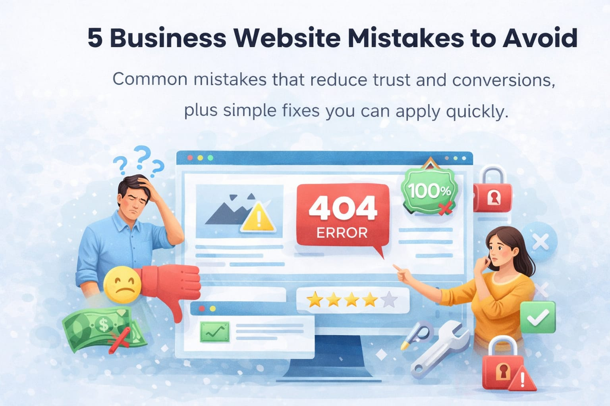

Many business owners wonder why their website is not bringing in money. Usually, it is because of these five common mistakes:
1. Hiding the Buy Button
If people have to hunt for your contact info or your products, they will give up. Keep your buttons bright and easy to find.
2. Too Much Tech Talk
Your customers do not care about your backend code; they care about how you solve their problems. Speak their language.
3. Slow Loading Speeds
A slow site feels broken to a customer. Speeding it up is the fastest way to build trust.
4. Ignoring Mobile Users
Most people in Kenya browse on their phones. If your site looks messy on mobile, you are losing 70% of your audience.
5. No Clear Next Step
Every page should tell the visitor what to do next. Should they call you? WhatsApp you? Buy now?
The Fix: We specialize in cleaning up these mistakes to turn your quiet website into a busy marketplace.
Want to fix your website? Click the WhatsApp button below and let us talk!